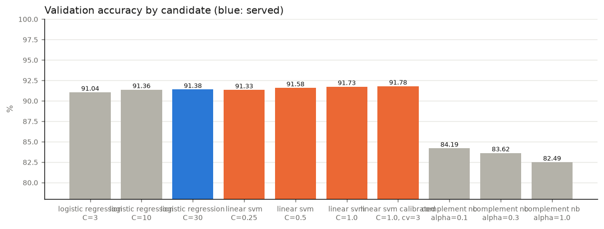
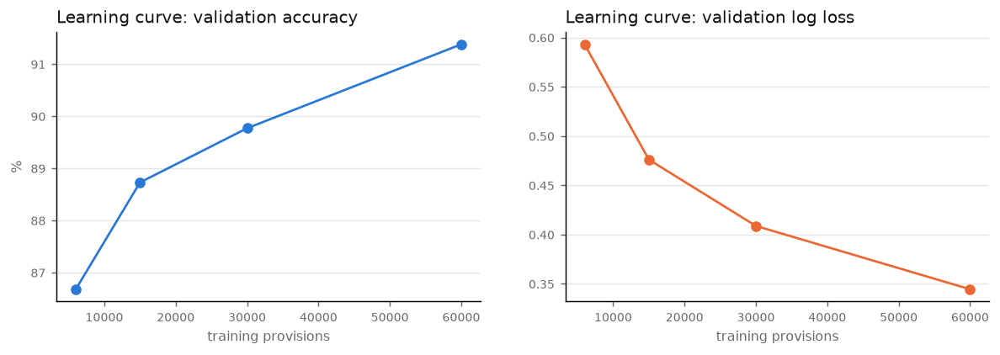
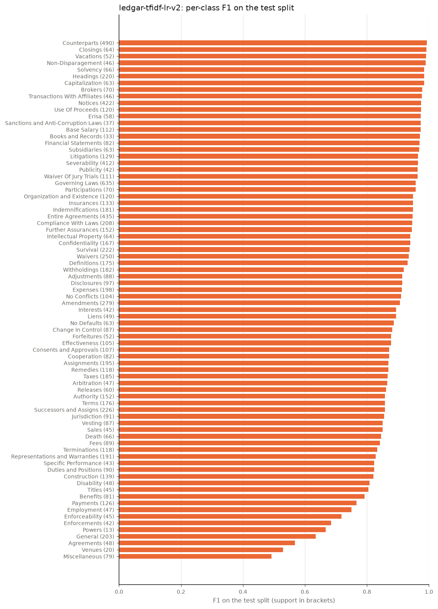

Classical model: ledgar-tfidf-lr-v2
Contract Clause Classifier: LEDGAR clause types, 78 classes, same data and splits for every model.
Classical machine-learning model. Each provision becomes a sparse TF-IDF vector of word phrases and character
fragments, and a linear classifier (logistic regression) scores the 78 clause types. No neural network, CPU only,
and every decision can be traced to weighted phrases. Latest version: ledgar-tfidf-lr-v2.
Model
| Setting | Value |
|---|---|
| Features | TF-IDF, sublinear term frequency: word 1-2 grams (178,539 features) + character 3-5 grams within words (74,564); 253,103 in total |
| Classifier | multinomial logistic regression, C = 30, lbfgs |
| Selection | C chosen by validation accuracy among the logistic-regression candidates; SVM and Naive Bayes trained for comparison |
| Calibration | temperature 1.097 fitted on the 10,000-row validation split |
| Inference | 0.8 ms per provision on one CPU core |
| Dependencies | scikit-learn + joblib, no GPU |
Training: candidates and loss
Every candidate is trained on the same 60,000 provisions and the same features, and scored on the full validation split. Log loss is the cross-entropy of the predicted probabilities (lower is better); a large gap between training and validation log loss means over-fitting.

| Model | Parameters | Val acc | Val top-3 | Val macro-F1 | Val log loss | Train log loss | Fit s |
|---|---|---|---|---|---|---|---|
| logistic regression | C=3 | 91.04% | 97.57% | 87.81% | 0.3755 | 0.1441 | 228 |
| logistic regression | C=10 | 91.36% | 97.60% | 88.35% | 0.3437 | 0.0565 | 297 |
| logistic regression served | C=30 | 91.38% | 97.56% | 88.40% | 0.3445 | 0.0218 | 298 |
| linear svm | C=0.25 | 91.33% | 97.29% | 88.15% | – | – | 41 |
| linear svm | C=0.5 | 91.58% | 97.17% | 88.61% | – | – | 43 |
| linear svm | C=1.0 | 91.73% | 97.00% | 88.88% | – | – | 49 |
| linear svm calibrated | C=1.0, cv=3 | 91.78% | 97.15% | 88.78% | 0.3784 | 0.1227 | 99 |
| complement nb | alpha=0.1 | 84.19% | 94.25% | 77.64% | 1.1611 | 0.9529 | 1 |
| complement nb | alpha=0.3 | 83.62% | 94.07% | 76.79% | 1.2412 | 1.0886 | 1 |
| complement nb | alpha=1.0 | 82.49% | 93.54% | 75.14% | 1.3825 | 1.2986 | 1 |
Learning curve (served configuration)
Accuracy keeps rising with more data: 6,000 → 86.7%, 15,000 → 88.7%, 30,000 → 89.8%, 60,000 → 91.4%.

Test results (full 10,000-provision test split)
| Metric | Value |
|---|---|
| Accuracy | 90.88% |
| Top-3 accuracy | 97.33% |
| Micro / macro / weighted F1 | 90.88% / 88.24% / 90.66% |
| Log loss (calibrated) | 0.3837 |
| Calibration error | 2.6% before, 1.9% after temperature scaling |

Most frequent confusions
| True clause type | Predicted as | Count |
|---|---|---|
| Taxes | Withholdings | 19 |
| Successors and Assigns | Assignments | 13 |
| General | Payments | 13 |
| Miscellaneous | Entire Agreements | 12 |
| Assignments | Successors and Assigns | 12 |
| Representations and Warranties | Survival | 12 |
| Fees | Expenses | 9 |
| Benefits | Successors and Assigns | 9 |
| Employment | Duties and Positions | 8 |
| Amendments | Entire Agreements | 8 |
| Construction | Severability | 7 |
| Jurisdiction | Governing Laws | 7 |
| Venues | Governing Laws | 7 |
| Enforceability | Severability | 7 |
| Miscellaneous | Governing Laws | 7 |
| Specific Performance | Remedies | 7 |
| General | Terminations | 7 |
| General | Vesting | 6 |
| Terms | General | 6 |
| Duties and Positions | Employment | 6 |
Why it decides: top phrases per clause type
The word phrases with the largest positive weight for each clause type in the served model.
78 clause types
| Clause type | Strongest phrases |
|---|---|
| Adjustments | adjustment, the plan, adjusted, be adjusted, the number, to adjustment, are subject, events, certain events, events as |
| Agreements | the agreement, and agrees, agreements, shall have, contracts, morris, new borrower, borrower administrative, exhibits hereto, agrees that |
| Amendments | be amended, amend, amended, agreement may, signed by, hereby amended, by written, no amendment, any amendment, amendment to |
| Arbitration | arbitration, arbitration in, binding arbitration, dispute, employment, claims, jams, the employment, before, arbitrator |
| Assignments | assign, assigned by, hereby assigns, be assigned, assigned, agreement is, assignable, and obligations, conditions herein, s successors |
| Authority | and to, duly authorized, authority to, agreement when, obligation of, a valid, party and, to perform, to execute, warrants that |
| Base Salary | salary, base, base salary, 000, rate of, rate, salary will, salary of, an annual, paid in |
| Benefits | hereto and, the benefits, health, any benefit, plans, executive, employee, benefits, and waiver, benefits set |
| Books and Records | records, books, records and, records of, record, books of, the records, inspection, materials, information |
| Brokers | broker, finder, broker or, brokers, fees, commissions, fee or, commission, no broker, no |
| Capitalization | and outstanding, capitalization, outstanding, issued and, authorized, stock of, as of, the capitalization, the authorized, issued |
| Change In Control | in control, change in, change, control, a change, any change, control the, in the, apply except, 16 c |
| Closings | the closing, closing shall, closing, closing of, occur, place, shall occur, take place, shall deliver, offices of |
| Compliance With Laws | with all, all applicable, comply, laws, all laws, all requirements, in violation, comply with, laws and, to comply |
| Confidentiality | information, confidential, disclose, confidentiality, all information, such information, by law, the confidentiality, be bound, proprietary information |
| Consents and Approvals | consents, consent, consent to, consents to, obtained, hereby consent, approval, all consents, hereby, permits |
| Construction | include, construed and, construction of, be construed, agreement unless, considered a, binding on, construction, york applicable, include the |
| Cooperation | cooperate, shall cooperate, agrees, cooperate with, assist, provide, necessary or, reasonable, cooperate in, cooperation |
| Counterparts | counterparts, which shall, be executed, same, the same, one, of which, in counterparts, received counterparts, executed in |
| Death | death, dies, estate, s death, participant dies, die, terminate, shall terminate, if, your estate |
| Definitions | for purposes, defined in, the meanings, term, in this, purposes of, meanings, section 1, the term, definitions |
| Disability | disability, s disability, a disability, 4 below, of disability, disabled, the executive, if, 3 4, if the |
| Disclosures | disclose, information, fact, state any, the confidential, make, copy, material, necessary in, press |
| Duties and Positions | duties, position, officer, shall perform, shall report, duty, accepts employment, such duties, reporting directly, the consultant |
| Effectiveness | effective, be effective, amendment shall, this amendment, become effective, date, this, the date, plan shall, plan |
| Employment | employment period, employed, and conditions, employment, employ, terms and, an employee, conditions, such employment, the terms |
| Enforceability | enforceable, is enforceable, binding obligations, enforceable in, the enforcement, delivered by, constitutes and, amended hereby, declared illegal, and is |
| Enforcements | liquidation and, validly authorized, enforce, authorized executed, hereby further, to enforce, delivered on, applicable creditors, and remedies, suit |
| Entire Agreements | the entire, entire agreement, entire, integrated, be integrated, integrated with, agreement of, agreements, and understanding, contains |
| Erisa | erisa, of erisa, plan, pension, 1974, of 1974, retirement income, employee retirement, plans, erisa and |
| Expenses | expenses, pay, costs, expenses of, costs of, incurred by, pay all, damage waiver, indemnity damage, its reasonable |
| Fees | fee, fees, pay to, shall pay, pay, any fees, the fees, fees required, all fees, paid |
| Financial Statements | financial statements, statements, financial, undisclosed, the financial, statements of, 1 18, the sec, balance, sec |
| Forfeitures | forfeit, be forfeited, forfeited, forfeiture, all unvested, shall forfeit, vested, vested pursuant, section, termination of |
| Further Assurances | execute, take, deliver, and deliver, cooperate with, documents and, further, cause, other instruments, reasonably |
| General | in this, this section, committee shall, following meanings, 3 b, conditions herein, the benefits, a termination, vesting date, board may |
| Governing Laws | laws, laws of, the laws, state of, law, governed by, governed, the state, be governed, delaware without |
| Headings | headings, for convenience, are included, in this, convenience, for reference, convenience of, are, the headings, and shall |
| Indemnifications | indemnify, indemnification, shall indemnify, indemnify the, harmless, indemnification agreement, liability insurance, against, be liable, losses |
| Insurances | insurance, coverage, maintain, policies, such insurance, insured, maintain insurance, insurance on, amounts, condemnation |
| Intellectual Property | intellectual, intellectual property, owned, patent, use, trademark, designs, to use, applications, ip |
| Interests | interest, rate, shall bear, bear interest, interest shall, bear, accrue, this note, interest on, shall accrue |
| Jurisdiction | 1 without, this warrant, warrant shall, state, jurisdiction, courts in, state of, determined in, a governing, states without |
| Liens | liens, lien, leasehold, such lien, create, assets, any lien, any liens, loan party, suffer to |
| Litigations | litigation, pending, there, threatened, order, pending or, before any, actions, governmental, any litigation |
| Miscellaneous | a the, as may, be governed, joinder agreement, may, be an, a, such further, be executed, this rsu |
| No Conflicts | any agreement, conflict, violate, performance of, violate any, nor the, nor, not violate, with or, will not |
| No Defaults | default, no default, in default, no, occurred, occurred and, no event, default under, default or, or with |
| Non-Disparagement | disparage, disparaging, reputation, make, statements, make any, executive, any statement, disparage the, officers |
| Notices | notices, notice, given, sent, notify, be given, any notice, promptly, provide, address |
| Organization and Existence | validly existing, existence, authority, authority to, validly, its existence, obtained and, perform its, properties, is a |
| Participations | participation, participant in, participation in, such lender, participations, lender, all or, selected to, eligible employee, a participant |
| Payments | payment, be paid, separation benefits, pay, paid, additional closing, due, be made, payments, and separation |
| Powers | powers, power, and to, documents together, has all, all powers, powers and, the powers, such powers, the key |
| Publicity | press, press release, publicity, any press, releases, release, press releases, issue, name, without the |
| Releases | release, a release, such release, releases, released, provisions set, obligations other, payment, be released, forever |
| Remedies | remedies, remedy at, event of, law, under this, remedies available, available, damages, exercise all, document for |
| Representations and Warranties | warrants to, hereby represents, represents, represents and, all representations, as of, warranties, that as, warranties of, survive the |
| Sales | sell, sales, purchase, sale, convey, any sale, from seller, shall sell, sales and, shall purchase |
| Sanctions and Anti-Corruption Laws | anti-corruption, sanctions, laws, anti-corruption laws, use the, proceeds, any anti-corruption, its subsidiaries, or indirectly, act 2010 |
| Severability | unenforceable, if any, provision shall, provision, if, 10 12, severable, void or, invalid, a part |
| Solvency | solvent, is solvent, after giving, debts, giving effect, effect to, consolidated basis, a consolidated, giving, solvency |
| Specific Performance | specific performance, at law, specific, remedies at, breach or, damages, remedies, performance, be available, remedy |
| Subsidiaries | subsidiary, subsidiaries of, subsidiaries, each subsidiary, no subsidiaries, schedule, equity interests, has no, business as, interests |
| Successors and Assigns | binding, personal to, their heirs, and binding, assigns except, assignment or, shall bind, become effective, representatives and, borrower may |
| Survival | survive, shall survive, termination of, respective personal, survive the, expiration or, termination, representatives heirs, warranties, assignment and |
| Taxes | taxes, tax, pay, any taxes, a defined, to pay, terms for, satisfy any, 2, any amounts |
| Terminations | terminate, be terminated, shall terminate, may terminate, termination, at any, any time, apply during, terminate on, the termination |
| Terms | term, the term, date and, term of, shall expire, agreement shall, until, terminate, expire, effect until |
| Titles | title, titles, title to, liens, the titles, good and, dnp, and clear, chief, free and |
| Transactions With Affiliates | affiliate, transaction with, transaction, affiliate of, any transaction, director, favorable, arm, than, an affiliate |
| Use Of Proceeds | proceeds, the proceeds, use, proceeds of, be used, use the, proceeds from, shall use, the borrower, used |
| Vacations | vacation, paid vacation, entitled to, be entitled, entitled, executive shall, paid, time off, weeks, year |
| Venues | venue, county, venue for, the county, any action, only in, state, reference mutatis, arising, 12 of |
| Vesting | vest, shall vest, vesting, vested, vested in, 100 vested, the vesting, fully vested, units shall, be fully |
| Waiver Of Jury Trials | trial by, by jury, jury, trial, 15 of, waives, jury in, a jury, 11 15, this waiver |
| Waivers | of jury, trial each, waiver, waive, hereby waives, waives, be waived, waive any, waived, a written |
| Withholdings | withholding, tax, taxes, withhold, withheld, as may, required, payable to, applicable taxes, amounts as |
Versions
| Model | Version | Created | Val acc | Test acc | Test top-3 | Test macro-F1 |
|---|---|---|---|---|---|---|
ledgar-tfidf-lr-v2 | 2 | 2026-10-11 23:16 | 91.38% | 90.88% | 97.33% | 88.24% |
ledgar-tfidf-lr-v1 | 1 | 2026-10-11 22:21 | 91.38% | 90.88% | 97.33% | 88.24% |